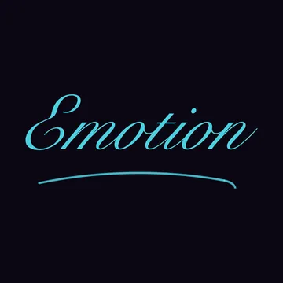
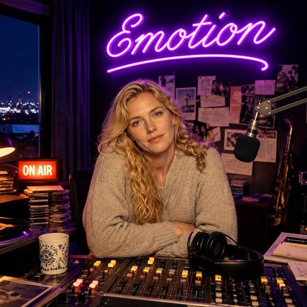

Vice Bay Radio · SLOWS · BALLADES · SAXO
EMOTION
98.3 FM
Éteignez la lumière. Le cœur passe en fréquence modulée.
avec Marie

Écouter EMOTION
SLOWS · BALLADES · SAXO

À l'antenne
MarieTrois heures du matin, tout le temps. Elle lit les dédicaces comme des lettres d'adieu, même un « joyeux anniversaire mamie ». Son chat, Régis, se fait parfois entendre.
Le jingle
« Quatre-vingt-dix-huit trois. EMOTION. C'est Lara. Vous ne dormez pas non plus. »
Sur l'antenne
Touche un titre pour l'écouter.
Crédits et licences (24)
- Aquarium · Kevin MacLeod
- Evening · Kevin MacLeod
- Adding the Sun · Kevin MacLeod
- Just Foolish · Admiral Bob
- Photo theme: Window like · Antony Raijekov
- Ambient Guitar Samples · Aussens@iter
- Guitar Instrumental Stem Pack · Aussens@iter
- The Parting Glass (Instrumental) · Aussens@iter
- My Life · Colin Mutchler
- Pompeii · copperhead
- Despair and Triumph · Kevin MacLeod
- Old Forms Must Die · Dmitriy Samoylenko
- Memory · Doxent Zsigmond
- Broken Orient · fluffy
- Rpg - A Long Way From Home — RPG - A Long Way From Home · Hitctrl
- Rpg Ambient 4 (The Dark Woods) — RPG_Ambient_4_The_Dark_Wood_ · Hitctrl
- Failure Song · jaspertine
- Heart On Redial · loveshadow
- I wonder what I'll do today · oldDog
- It's Not Allowed · Stefan Kartenberg
- Deflated & Alone (acoustic) · The.Spirit.Of.Light
- Slippin' & Slidin · unreal_dm
- Valse Gymnopedie · Kevin MacLeod
- A Robot'S Way To Heaven · Viktor Kraus
Les pubs de la station
Les commerçants de Vice Bay qui passent sur EMOTION.
Tu attends GTA VI ?
Actus vérifiées, compte à rebours et guides en français sur GTA VI France.